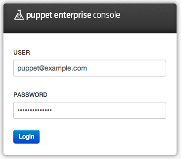
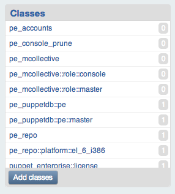
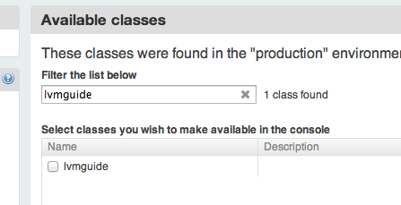
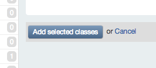
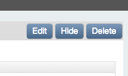
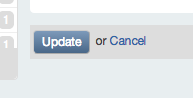

The Power of Puppet
Prerequisites
- Welcome Quest
Quest Objectives
- Use a module from the Forge, and a pre-written module to setup a website serving the quest guide.
- Use the Puppet Enterprise (PE) Console to manage the Learning VM's configuration
Getting Started
In this quest you will be introduced to the power of Puppet using the Puppet Enterprise (PE) Console and the Puppet Forge. The objective of this quest is to set up a functional website locally that will serve you the entire Quest Guide as an alternative to the PDF version. Don't worry though, both the website and PDF have the same content and will help guide you on your journey to learn Puppet.
We are not going to be writing any code in this quest to accomplish the objectives. Instead, we will be using a module from the Forge, as well as another that has been written for you on the Learning VM. This will serve as an example of how you can use the code that you will learn to write in the succeeding sections. We hope this gives you a high-level overview of what it is like to use Puppet Enterprise to manage systems, while leveraging code developed by the community that is shared on the Forge. Some of the technical terms in this quest may not be familiar, but we promise we will explain all of it by the end of the guide!
When you're ready to get started, type the following command:
quest --start power
The Puppet Forge
The Puppet Forge is a public repository of modules written by members of the Puppet community. We can leverage the content from the Forge to simplify the process of managing your systems. We will go into greater detail about the Forge in the Puppet Module Tool Quest.
But what is a Module, you ask? Simply put, a module is a self-contained bundle of code and data. We will learn about Modules in greater detail in the Module Quest.
Puppet Enterprise Supported Modules
Remember how we indicated in the Welcome Quest that Puppet Enterprise comes with several benefits, in addition to Puppet? Puppet Enterprise supported modules are modules that are rigorously tested with Puppet Enterprise and are also supported (maintained) by Puppet Labs.
Task 1 :
Install the puppetlabs-apache module.
For us to get started with setting up our Quest Guide website, we need to download and install the apache module from the Forge. In your terminal, type the following command:
puppet module install puppetlabs-apache
This tells Puppet to download and install the puppetlabs-apache module from the Forge onto the Learning VM. Modules are installed in the directory specified as Puppet's modulepath. For Puppet Enterprise, this defaults to /etc/puppetlabs/puppet/modules/.
Offline? No problem.
We've cached the required modules on the Learning VM. If you don't have internet access, run the following terminal commands instead of using the puppet module tool:
cd /etc/puppetlabs/puppet/modules
tar zxvf /usr/src/forge/puppetlabs-apache-0.8.1.tar.gz -C .
mv puppetlabs-apache-* apache
Great job! You've just installed your first module from the Forge. Pretty easy don't you think? We also went ahead and created the lvmguide module we will need. You will find this module in the modulepath directory as well.
The lvmguide and apache modules
The lvmguide module includes a class of the same name, which configures the Learning VM to act as a webserver serving the Quest Guide as a static html website. If you're wondering what a class is, it is a named block of Puppet code.
It does this by using the apache module you just installed to:
- install the Apache httpd server provided by the
httpdpackage - create a new VirtualHost that will act as the Quest Guide website
- configure httpd to serve the Quest Guide website
- start and manage the httpd service
Finally, the lvmguide class places the files for the website in the appropriate directory.
Putting the modules to use
As we mentioned previously, a class is a named block of Puppet code. The lvmguide class contains the definition that will configure a machine to serve the quest guide. In order to configure the Learning VM to serve you the Quest Guide website, we need to assign the lvmguide class to it, a process known as Classification (don't worry about the terminology at this point. We'll talk more about this in the Modules Quest). To do this we will use the Puppet Enterprise Console.
The Puppet Enterprise Console
The PE Console is Puppet Enterprise’s web-based Graphical User Interface (GUI) that lets you automate your infrastructure with little or no coding necessary. You can use it to:
- Manage node requests to join the Puppet deployment
- Assign Puppet classes to nodes and groups
- View reports and activity graphs
- Trigger Puppet runs on demand
- Browse and compare resources on your nodes
- View inventory data
- Invoke orchestration actions on your nodes
- Manage console users and their access privileges
For this quest, we will use the PE Console to classify the VM with the lvmguide class.
The Facter Tool
Puppet Enterprise is often used in concert with other tools to help you administer your systems. Facter is one such tool. You can use the Facter tool to help you obtain facts about your system. Facter is Puppet’s cross-platform system profiling library. It discovers and reports per-node facts, which are available in your Puppet manifests as variables.
Facter is used and described in later quests, but the sooner you get familar with Facter, the better. Go ahead and get to know your system a little better using the facter command.
Facter is one of the many prepackaged tools that Puppet Enterprise ships with.
Task 2 :
Find the ipaddress of the VM using Facter:
To access the PE Console we need to find your IP address. Luckily, Facter makes it easy to find this. In your terminal, type the following command:
facter ipaddress
You can see all the facts by running `facter -p`
Please write down the IP address for the VM as you will need it to access the PE Console. Next, in your browser's address bar, type in: https://
Awesome! You are at the doorstep of the PE Console. Enter the login information below to gain access:
Username: puppet@example.com
Password: learningpuppet

Figure
Security Restriction
If your browser gives you a security notice, go ahead and accept the exception. The notification appears because we are using a self-signed certificate.
You're in! Now that you have access to the PE Console, the next step will be to classify the "learn.localdomain" node with the lvmguide class.
Using the PE Console for Classification
In order to classify the learn.localdomain node (the Learning VM) with the lvmguide class, we need to add the class to the list of classes available to the PE Console to classify nodes with. Let's add it.
Adding a Class to the PE Console
STEP #1: Click the "Add Classes" button
You may need to scroll to the bottom of the page. The button is located in the lower left hand corner of the screen in the Classes panel.

Figure
STEP #2: Type lvmguide in the "Filter the list below" input box

Figure
STEP #3: Select the checkbox associated with lvmguide class that appears in your results once you filter

Figure
STEP #4: Click the "Add selected classes" button to add the lvmguide class to the list of classes that can be assigned to node in the PE Console.

Figure
Verification
You should see the class appear in the list of classes on the left, and also see a verification message at the top of the PE Console.
Classifying a node
Now that the lvmguide is available in the PE Console, let's classify the node learn.localdomain with this class.
STEP #1: Click on the "Nodes" menu item in the navigation menu. You may need to scroll to the top of the page to see the navigation menu.

Figure
STEP #2: Click on the learn.localdomain node hyperlink (should be the only one listed since we are only managing the Learning VM with Puppet Enterprise). The list of nodes should be near the center of the PE Console.

Figure
STEP #3: Click the "Edit" button located in the top-right corner of the screen.

Figure
STEP #4: In the Classes section, type lvmguide in the "add a class" input box

Figure
Editing Class parameters
If you click on Edit Parameters for the lvmguide class you can see the defaults. There is nothing for you to do here for now, but it's good to notice it so you will know where to look if you need to edit the parameters for a class in the future.
STEP #5: Click the "Update" button at the bottom.

Figure
Excellent! We just finished classifying the learn.localdomain node with the lvmguide class.
Let's Run Puppet
Now that we have classified the learn.localdomain node with the lvmguide class, we need to tell puppet to configure the machine appropriately. The Puppet agent daemon does this by default by running in the background on any nodes you manage with Puppet. Every 30 minutes, the Puppet agent daemon requests a catalog from the Puppet Master, and applies the retrieved catalog. Since we want to see the configuration changes (as specified in the lvmguide class) applied immediately, we can ask the agent to fetch and enforce the definition for the “learn.localdomain” node.
Task 3 :
Apply the configuration changes.
Run puppet agent:
To fetch and apply the catalog we will manually trigger a Puppet run. Puppet will check the classification you set in the PE Console and automatically run through all the steps needed to implement the lvmguide class. In your terminal, type the following command:
puppet agent --test
After a brief delay, you will see text scroll by in your terminal indicating that some changes were made to the configuration of the VM and the website was set up. Please note this may take about a minute to run. This is about the time it takes for the software packages to be downloaded and installed as needed.
Ensure the website serving the Quest Guide is running!
There are no commands to run to make this happen - no packages to install, no files to edit, and no services to start. All the heavy lifting was done by the lvmguide and apache modules you installed.
Let's check out the Quest Guide! In your browsers address bar, type the following URL: http://<ip-address>.
Note that https://<ip-address> will load the PE Console, while http://<ip-address> will load the Quest Guide as a website.
The website for the quest guide will remain accessible for as long as the VM's IP address remains the same. If you were to move your computer or laptop to a different network, or if you suspended your laptop and resumed work on the Learning VM after a while, the website may not be accessible. You still have the PDF to follow along with.
In case any of the above issues happen, and you end up with a stale IP address, do the following to get a new IP address.
Refresh your DHCP lease:
service network restart
Find your IP address:
facter ipaddress
From this point on you can either follow along with the website or with the PDF, whichever works best for you.
Exploring the lvmguide Class
Let’s take a high level look at what the lvmguide class does for us. In your terminal you're going to want to cd into the modules directory:
cd /etc/puppetlabs/puppet/modules
Next, using vim, nano, or a text editor of your choice, open up the init.pp manifest. Type the following command in you terminal:
nano lvmguide/manifests/init.pp
We will learn more detailed information about each of these concepts in future quests. However, this is a leading example of how a few lines of Puppet code can automate a relatively complex task.
class lvmguide (
$document_root = '/var/www/html/lvmguide',
$port = '80',
) {
class { 'apache':
default_vhost => false,
}
apache::vhost { 'learning.puppetlabs.vm':
port => $port,
docroot => $document_root,
}
file { '/var/www/html/lvmguide':
ensure => directory,
owner => $::apache::params::user,
group => $::apache::params::group,
source => 'puppet:///modules/lvmguide/html',
recurse => true,
require => Class['apache'],
}
}
In the above code sample, we see that the class lvmguide:
- Takes two parameters:
$document_rootand$port - Declares the class
apachewith thedefault_vhostparameter set tofalse. That's the equivalent of saying "I need apache to be setup without the default VirtualHost." - Declares an
apache::vhostfor the quest guide with the titlelearning.puppetlabs.vm, and with$portand$docrootset to the class parameters. Now this is the same as saying "Please set up a VirtualHost website running on port 80, serving the "learning.puppetlabs.vm" website with the files from the /var/www/html/lvmguide' directory - Sets the document root to
/var/www/html/lvmguide(which is the default value for the $document_root parameter - Finally, the class ensures that the directory
/var/www/html/lvmguideexists and that its contents are managed recursively. We notice that the source for the contents of that directory is also specified
The details may not be extremely clear at this point in your learning journey, but will hopefully get clearer as you complete more quests. The rest of the Quest Guide will help you get to the point where you can write your own classes and modules. Our hope is that the code for the lvmguide class listed above appears to be friendly and elegant. We often talk about Puppet's Domain Specific Language (DSL) as self-documenting code.
The real power here is that you now have the class lvmguide that can be applied to any number of nodes as long as you manage them with Puppet. Since we have lvmguide as a module in a directory by itself, you can share that directory with someone else, and ask them to place it in their Puppet master's modulepath, where they too can also get the Quest Guide website up and running on any number of nodes. With a few lines of code, we installed and configured the Apache httpd web server to serve us the Quest Guide website, by leveraging a freely available, shared, module from the forge - puppetlabs-apache.
Review
Great job on completing the quest! To summarize, we learned how to leverage exising modules on the Forge and use the PE Console to set up our quest guide website locally. We also learned how to classify a node with a class. We will continue to reference the block of Puppet code for the lvmguide module throughout the remaining quests in order to understand what we did.